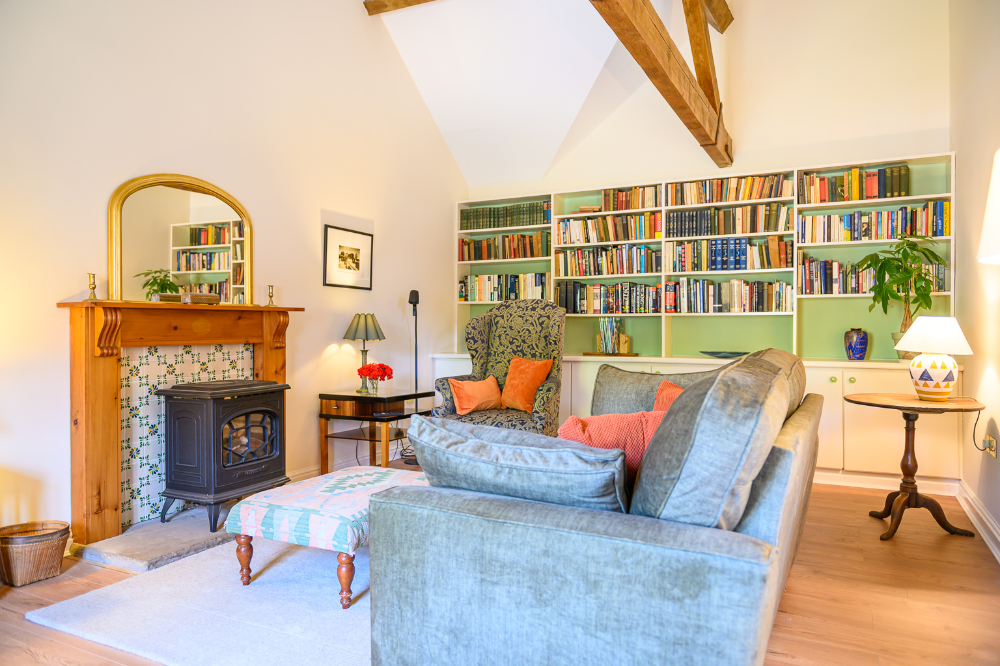
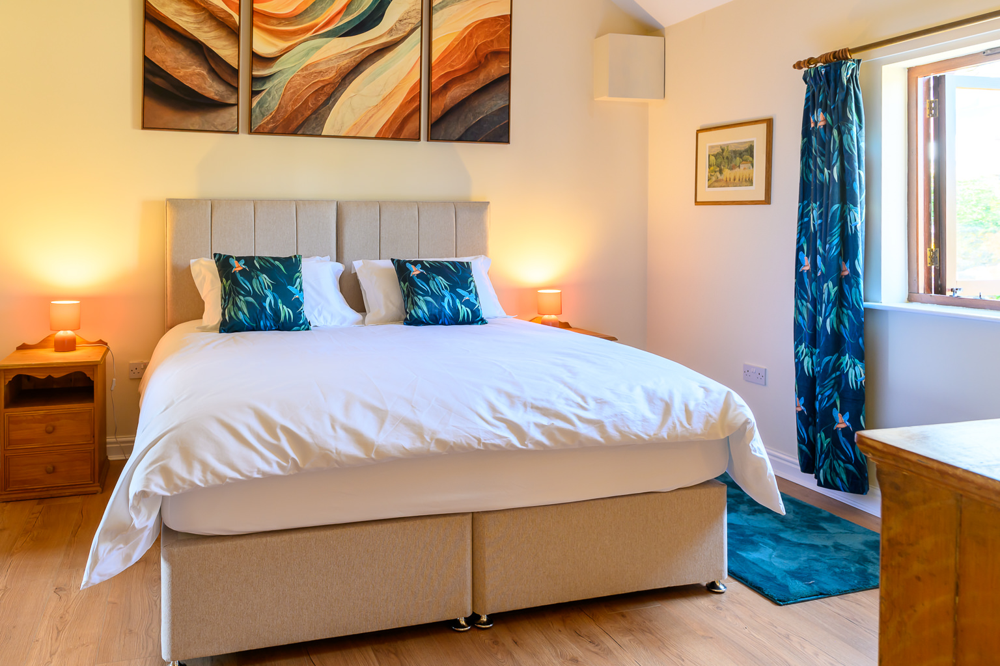
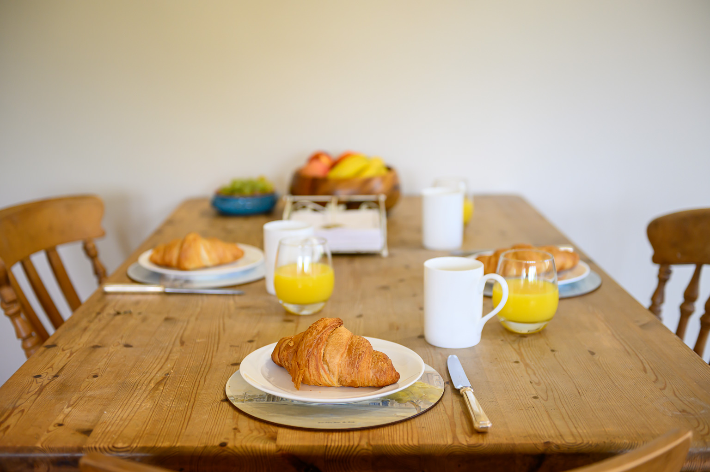
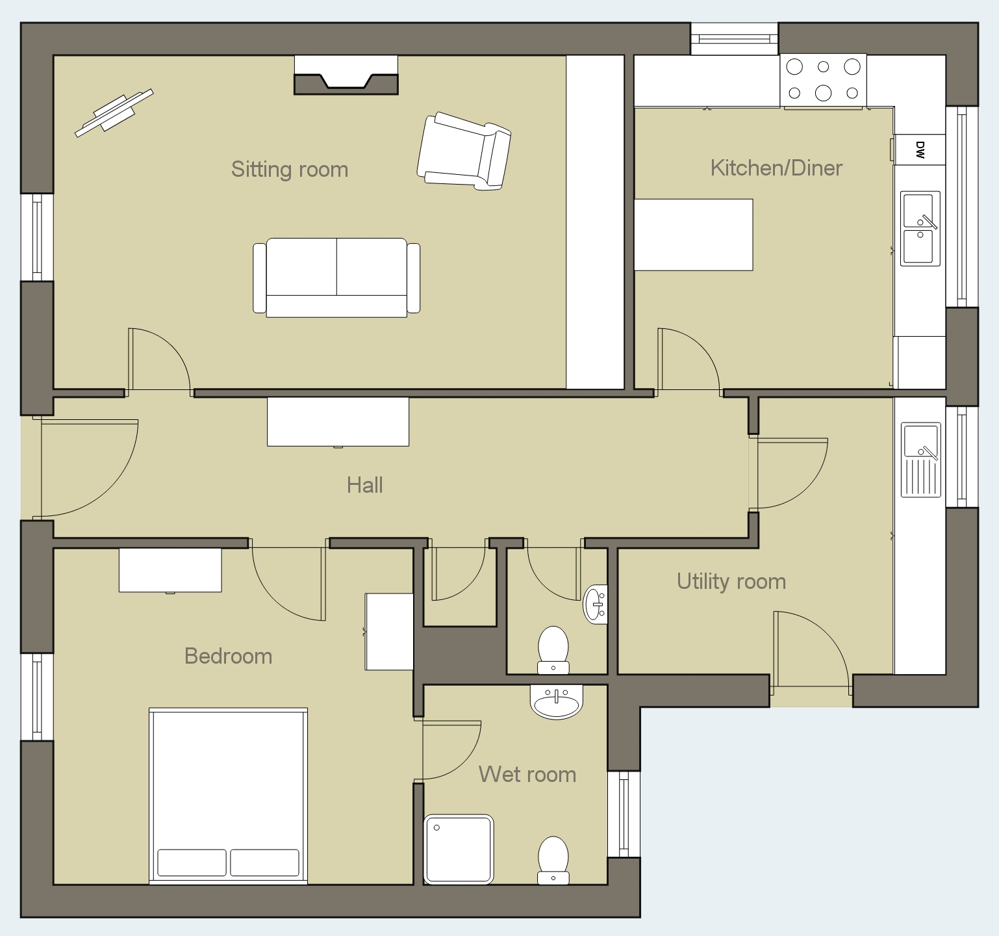

Kingfisher
A light, ground-floor cottage named for the flash of blue that darts along the River Rea, with its own kitchen/diner, sitting room and utility room, and shared access to the pool and gardens.
Ground-floor, self-contained, and all yours
Kingfisher is a single-storey cottage converted from the original farm buildings, retaining plenty of character while giving you everything you need for a comfortable stay.
The bedroom can be made up as a super king or as twin beds, whichever suits, and has its own ensuite wet-room shower and loo.
The sitting room has a comfortable sofa bed, Smart TV and WiFi, so it's just as good for a lazy morning as it is for planning the day ahead.
The kitchen/diner is well equipped for cooking properly rather than just getting by. There is a separate utility room with washer and dryer, handy if you're staying a while, or have been out exploring the river.
Step outside and you're straight onto the shared garden, with the heated pool, loggia and plenty of off-road parking close by.

A restful room to come back to
The bedroom can be arranged as a super king bed or as twin beds, just let us know your preference when you book. Bed linen and towels are included, along with pool towels for your time by the water.
The ensuite wet room has a shower and loo. There is also a separate loo just along the hall.

What's provided
- Kitchen/diner, fully equipped for cooking
- Utility room with washing machine and dryer
- Sitting room with Smart TV and WiFi
- Ensuite wet-room shower/loo and separate loo
- Bed linen, towels and pool towels included
- Underfloor heating throughout
- Shared access to garden and heated outdoor pool (mid-May to mid-September)
- Ample off-road parking

Kingfisher Gallery
{kind=link}
{kind=link}
{kind=link}
{kind=link}
{kind=link}
{kind=link}
{kind=link}
{kind=link}
{kind=link}
{kind=link}
{kind=link}
{kind=link}
{kind=link}
{kind=link}
{kind=link}
{kind=link}
{kind=link}
{kind=link}
{kind=link}
{kind=link}
Kingfisher Floor Plan
{kind=link}

Click the floor plan to view a larger version
Take a look at The Hayloft too
Our sister cottage, full of exposed beams and just as close to the pool and river.